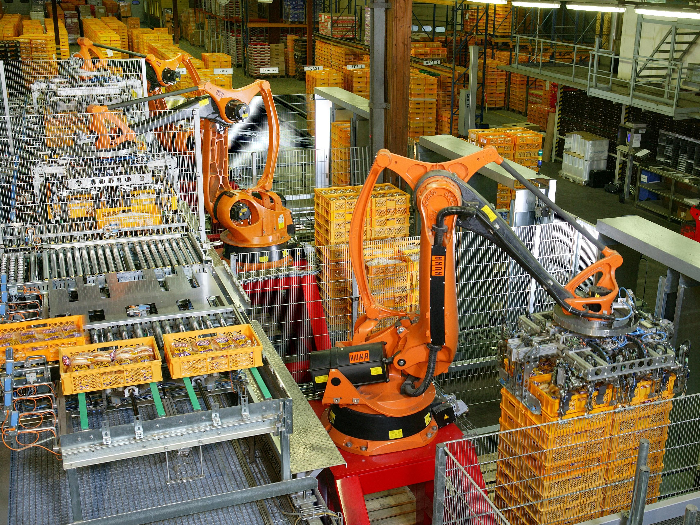

Executive Summary
About 75% of adults fear losing their job to AI, yet the ground is strangely quiet. In an NBER study surveying 6,000 executives across the US, UK, Germany, and Australia, more than 80% of firms said AI had produced no measurable effect on their headcount over the past three years. The forecasts weren't wrong. The impact simply hasn't arrived yet.
Brookings pins the cause of that delay in a single sentence. What has protected workers so far is not pro-labor design, not the cost of the technology, not labor regulation, and not bargaining power — it is the plain "friction" of organizations that cannot yet put new technology to work. And removing exactly that friction is what AI does. Today's shield is tomorrow's target.
This piece asks how we should spend the time that friction has bought us. Where the friction was thin, entry-level hiring, it has already been breached (early-career employment in AI-exposed roles is down by as much as 16%), and the window to design a buffer is narrower than it looks.
80%+
Firms reporting "zero AI hiring impact"
NBER, 6,000 executives — mass layoffs not yet here
1%
Job cuts directly attributable to AI
Gartner — the rest have other causes
79%
Organizations struggling to adopt AI
The real substance of the "friction" shielding workers
−16%
Entry-level hiring in AI-exposed roles
The thin spot collapsing quietly, first
Why Mass Layoffs Haven't Come Yet
The gap between fear and reality is wide. Across multiple polls, roughly 75% of adults worry about losing work to AI, and that worry ranks higher than concerns about safety or national security. Yet the labor-market indicators are quiet. When NBER surveyed 6,000 executives across the US, UK, Germany, and Australia, it found that 70% of firms use AI, but more than 80% reported no measurable effect on hiring or productivity over the past three years. Executives spent only about 1.5 hours a week on AI. Even the same study's three-year forecast is mild: it projects a headcount decline of just 0.7%, and about two-thirds of even that decline would come not from layoffs but from attrition — not backfilling those who retire. The mass-layoff scenario isn't even inside the projection graph yet.
Dissecting the causes of job cuts tells the same story. Gartner estimates that only about 1% of the layoffs to date are directly attributable to AI-driven productivity gains. The rest come from familiar causes — over-hiring corrections, high interest rates, an economic slowdown. Oxford Economics sums it up: firms "do not appear to be replacing workers with AI at any meaningful scale."

So the first distinction matters. "The forecast was wrong" and "it hasn't arrived yet" are entirely different claims. Most credible diagnoses point to the latter. Layoffs are absent not because AI is incapable, but because that capability hasn't yet flowed inside organizations. What that bottleneck is — that's where this piece begins.
The quiet is not the absence of risk; it's that something sits between the risk and reality. Identify what that "something" is, and you can also gauge how long this reprieve will last.
It Wasn't Policy or Bargaining Power That Protected Workers
Brookings's workforce-policy report contains the sentence that frames this whole piece. The disruption of the labor market has been held back so far "largely by the organizational frictions seen in prior waves of technology adoption — not by the pro-worker design of AI tools, nor the cost of adopting the technology, nor formal labor regulation, nor workers' bargaining power."
The author negates, one by one, the four candidates commonly credited with protecting workers — pro-labor AI design, the cost of adoption, labor regulation, and bargaining power.
| Candidate credited with protecting workers | Why it wasn't the shield |
|---|---|
| Pro-labor AI design | Tools aren't designed to protect workers. Productivity and cost savings come first. |
| Cost of adoption | API and subscription costs are already low and keep falling. They form no real barrier. |
| Labor regulation | No federal law requires firms to disclose whether AI was involved in mass layoffs. |
| Bargaining power | Private-sector union membership is below 6%. The more exposed the role, the weaker the organizing. |
| What remains: organizational friction | Adoption lag, implementation hurdles, the time-gap to deployment on the ground. The only effective shield. |

The last row is the crux. Cross out the four, and one reason remains: the sluggishness it takes an organization to actually put new technology to work. Brookings defines this as adoption lag, internal implementation hurdles, and the delay between when a technology becomes usable and when it's deployed on the ground — and stresses that it amounts only to a "temporary reprieve."
How thin the shield is becomes clear on the bargaining-power side. What Brookings calls a "massive mismatch" — the fact that jobs with higher AI exposure are, if anything, less likely to be unionized — means the people most exposed to the risk are the least organized. If a shield has been held by inertia rather than by institutions, then the moment that inertia loosens, there is nothing left to protect.
The fact that workers are protected today by organizational sluggishness rather than by institutions implies two things. First, no one designed this protection and no one is obligated to defend it. Second, when it disappears, nothing automatically takes its place.
The Shield Is the Target
Here we reach the heart of the argument. The friction protecting workers right now is precisely what AI has set out to remove. Coordination, documentation, approval chains, middle management, cross-departmental alignment — everything that makes an organization sluggish is a shield today, but eliminating that friction is exactly the core use case of generative AI. Which means the shield and the target are the same thing.
Evidence that the friction is real is everywhere in adoption. In WRITER's 2026 enterprise survey, 79% of organizations said they were struggling to adopt AI (a double-digit increase year over year), and 54% of the C-suite admitted "AI adoption is tearing the company apart." 56% reported power struggles and confusion, and 78% experienced tension between IT and other departments.
There's a subtler fact, too. Some of the friction is self-protective resistance. In the same survey, 29% of employees (44% among Gen Z) admitted to sabotaging their company's AI strategy. Quiet politics to protect one's job is slowing adoption. But 60% of firms said they plan to fire employees who don't use AI. The time for which resistance can serve as a shield is not long.
When the shield and the target are the same, defense is a matter of time, not of direction. The day organizations learn to run AI properly is the day the shield disappears. So the question is not "how powerful is AI" but "what will we build with the time we have left."
It Broke First Where It Was Thinnest
The friction isn't uniformly thick. It breaks first where it was already thin. The thinnest spot is new hiring. Letting an existing employee go carries thick friction — coordination, cost, reputation — but simply not hiring in the first place carries almost none. So the shock arrives first in the shape of a hiring freeze, not a layoff.
According to an analysis by Yale Insights, early-career employment in AI-exposed roles has fallen by as much as 16% since generative AI spread, and the job-search success rate for 22-to-25-year-olds dropped 14%. The point isn't "visible layoffs" but "opportunities that never appear." Where the shield was thin, the ground is giving way quietly, in a way that barely registers in the statistics.
Another signal is "AI washing." Roughly 6 in 10 firms frame financially motivated job cuts as AI's doing (17% explicitly, 42% somewhat). Even OpenAI's Sam Altman has acknowledged this washing exists. The directions are opposite but the implication is identical. On one side, work AI didn't do gets blamed on AI; on the other, work AI is already doing (eroding entry-level hiring) never shows up in the numbers. Either way, we cannot honestly measure the true size of the shock right now.
The entry-level freeze is a trailer. If the thin spots broke first, the thick spots will eventually move in the same direction. Behind the delay and the disguise, the change is already underway — we simply can't see all of it.
The Buffers Must Be Designed Now
The time friction has bought is the only asset we have. The problem is that if we don't spend it on institutional design, a gap arrives with neither shield nor buffer. Brookings organizes the policy to fill that gap into four strands — brakes, steers, buffers, and shifts.
| Strand | Purpose | Examples |
|---|---|---|
| Brakes | Guardrails on automation | Mandatory human-in-the-loop for algorithmic decisions; pre-deployment impact assessments |
| Steers | Influence the choices | Expanded apprenticeships, pro-labor procurement, adjusting the tax treatment of automation |
| Buffers | Reduce harm and hardship | Modernized unemployment insurance, a right to retrain, wage insurance, flexicurity |
| Shifts | Structural change | Four-day-week pilots, universal capital accounts, labor-favoring tax policy |
The reader's question centers on the third strand: buffers. Brookings argues that unemployment insurance, designed for a 20th-century industrial economy, may now need to fire multiple times across a single worker's career. A right to retrain (the New Jersey model), wage insurance, and Danish-style flexicurity are discussed alongside it. The problem is that this design takes time — and the time friction has bought is the only budget for it.
The good news is that in a few places the clock has already started. Three concrete moves surfaced in 2026.
California, via Executive Order N-6-26, ordered an AI jobs-impact dashboard within 90 days and a safety-net review within 180 days. RAISE US has secured more than $500 million toward its $1 billion goal — with the irony that the money came from the very firms that made AI-driven cuts (Amazon, Anthropic, Microsoft, OpenAI). A remark by Gina Raimondo, who sits close to the Brookings camp, sums up the urgency of the timetable: "I don't expect bold action from Congress in the next few years, but we can't wait years either."
The Bipartisan Policy Center estimates that of the 37 million people in the jobs most exposed to AI, about 6 million carry both high exposure and low capacity to adapt. They are concentrated in office and administrative work, are overwhelmingly women, and are clustered in small and mid-sized cities. The diagnosis is that unemployment insurance alone cannot absorb a shock of this depth. Fail to design a buffer before the friction disappears, and the people who stood behind the thinnest shield will be the first exposed, with no preparation at all.
Editor's note. The disappearance of friction also means organizations have finally made their data and processes into something "AI can run." The quality of that transition governs the speed of the labor shock. If you're interested in the problem of shaping data into a form AI can trust, we'd point you to the AI-Ready Data perspective Pebblous has written about. The conclusion of this piece, however, remains squarely on the timetable for buffers.
References
R.1Primary Sources & Policy
- 1.Brookings Institution. (2026). "Getting to all-of-the-above: A framework of solutions for AI's coming impacts on work and workers."
- 2.Office of the Governor of California. (2026-05-21). "Governor Newsom signs first-of-its-kind Executive Order N-6-26 on AI and the workforce."
- 3.Bipartisan Policy Center. (2026). "AI and the Workforce: An Uncertain Future and an Unprepared Present."
R.2Academic & Research
- 4.Bloom, N. et al. (2026). "Firm Data on AI." NBER Working Paper No. w34836.
- 5.Yale School of Management Insights. (2026). "The Real Job Destruction From AI Is Hitting Before Careers Can Start."
- 6.SHRM. (2026). "State of AI in HR 2026 — Full Report."
R.3Industry & Press
- 7.WRITER. (2026). "Enterprise AI adoption 2026."
- 8.Fortune / Oxford Economics. (2026-01-07). "AI layoffs are a convenient corporate fiction."
- 9.TechTimes. (2026-06-30). "AI Workforce Retraining Fund (RAISE US) Hits $500M."